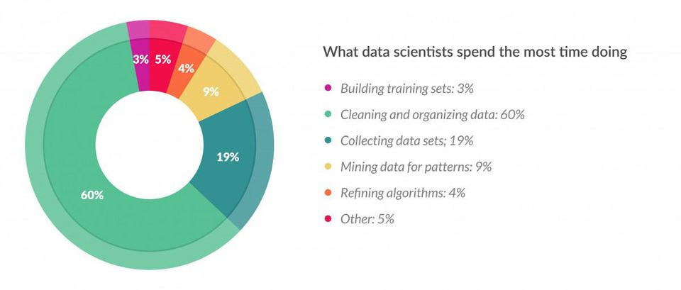

Publicación de datos siguiendo principios FAIR
Mikel Egaña Aranguren
mikel-egana-aranguren.github.io

Mikel Egaña Aranguren
Mikel Egaña Aranguren
mikel-egana-aranguren.github.io
https://doi.org/10.5281/zenodo.4302267
https://github.com/mikel-egana-aranguren/MSc-UM-2020-FAIR

Principios FAIR: una mejor publicación de datos (Científicos)
Para humanos y máquinas
No es un estándar
No promueven una tecnología concreta
Son principios guía
No se cumplen de manera binaria (aprobado o no)
Un sistema siempre puede ser "más FAIR"
80% del tiempo buscando, filtrando, masajeando e integrando datos
La reproducibilidad es crucial en ciencia:
Crisis de la reproducibilidad debido a:
Findable
Accesible
Interoperable
Reusable
F1. (Meta)Data are assigned a globally unique and persistent identifier
F2. Data are described with rich metadata (R1)
F3. Metadata clearly and explicitly include the identifier of the data it describes
F4. (Meta)Data are registered or indexed in a searchable resource
A1. (Meta)Data are retrievable by their identifier using a standardized communications protocol
A1.1 The protocol is open, free, and universally implementable
A1.2 The protocol allows for an authentication and authorization procedure, where necessary
A2. Metadata are accessible, even when the data are no longer available
I1. (Meta)Data use a formal, accessible, shared, and broadly applicable language for knowledge representation.
I2. (Meta)Data use vocabularies that follow FAIR principles
I3. (Meta)Data include qualified references to other (Meta)Data
R1. (Meta)Data are richly described with a plurality of accurate and relevant attributes
R1.1. (Meta)Data are released with a clear and accessible data usage license
R1.2. (Meta)Data are associated with detailed provenance
R1.3. (Meta)Data meet domain-relevant community standards
No confundir las tecnologias para implementar principios FAIR con los principios FAIR
Data should be identified using globally unique, resolvable, and persistent identifiers, and should include machine-actionable contextual information that can be indexed to support human and machine discovery of that data
Globally unique: dominios (€), registros, algoritmos (e.g. UUID), etc.
Persistent: infraestrtuctura propia (€€€), registros, etc.
Infraestructura propia: por ejemplo W3C URI Persistence Policy
Registros: http://identifiers.org, http://www.doi.org, https://orcid.org/
URI: Uniform Resource Identifier
Identifica un recurso (URL: Localiza un documento)
HTTP: podemos usar HTTP para acceder (Resolver) a esa URI (dominio)
Identifiers for the 21st century: How to design, provision, and reuse persistent identifiers to maximize utility and impact of life science data McMurry JA, Juty N, Blomberg N, Burdett T, Conlin T, et al. (2017) Identifiers for the 21st century: How to design, provision, and reuse persistent identifiers to maximize utility and impact of life science data. PLOS Biology 15(6): e2001414. https://doi.org/10.1371/journal.pbio.2001414
Nuestro laboratorio de la UM ha descubierto un gen nuevo, PKD1, que esta implicado en enfermedades renales de los humanos
La UM tiene un repositorio persistente de datos
URI del dataset: https://um.es/dataset/genes
URI de un gen: https://um.es/data/GenPKD1
Anadir metadatos con el maximo de detalles posible
Metadatos de contenido: a que especies pertenecen los genes, etc.
Metadatos técnicos: la tematica de los datos, cuando se generaron, como, etc.
Se usan ontologias (I1)
Repositorios de ontologias: Linked Open Vocabularies, OBO Foundry, BioPortal, BioSchemas, etc.
"https://um.es/dataset/genes was generated on 2020-12-10T13:00:07"
"https://um.es/dataset/genes is about genes"
"https://um.es/dataset/genes relates to humans"
etc.
Repositorios generales: Zenodo, DataDryad, Dataverse, etc.
Repositorios especificos: UniProt, etc.
Indexadores como Google
Google indexa de manera "básica" ...
... pero cada vez menos, gracias a Schema (ontologia muy ligera para describir datos en la web)
Bioschemas (?)
Hay que intentar publicar buenos metadatos para una indexacion adecuada (por Google o cualquier agente que entienda las ontologias que usamos)
Identified data should be accessible, optimally by both humans and machines, using a clearly-defined protocol and, if necessary, with clearly-defined rules for authorization/authentication
Por ejemplo HTTPS
Por ejemplo HTTPS
Hacer explicitas las condiciones fisicas de acceso, para humanos y maquinas
Datos protegidos por propiedad intelectual o privacidad (ej. datos clinicos): no se publican los datos, pero si sus metadatos y sus condiciones de acceso
Por ejemplo HTTPS
Conservar datos es muy caro
Conservar metadatos es mucho mas barato
Si los datos ya no existen, deberiamos ser explicitos sobre ello, por ejemplo para evitar busquedas innecesarias
Data becomes interoperable when it is machine-actionable, using shared vocabularies and/or ontologies, inside of a syntactically and semantically machine-accessible format
Las maquinas tambien tienen que entender los (meta)datos
Por ejemplo OWL (Web Ontology Language)
Las ontologia usadas para describir los datos tambien se tienen que publicar como FAIR
Los (meta)datos son solo utiles cuando los integramos con otros datos
Enlaces explicitos a otros datos: part-of, catalyses, etc.
Reusable data will first be compliant with the F, A, and I principles, but further, will be sufficiently well-described with, for example, contextual information, so it can be accurately linked or integrated, like-with-like, with other data sources. Moreover, there should be sufficiently rich provenance information so reused data can be properly cited
R1.1. (meta)data are released with a clear and accessible data usage license
R1.2. (meta)data are associated with detailed provenance
R1.3. (meta)data meet domain-relevant community standards
F2 es para descubrir datos, R1 es para decidir si los datos son utiles
I es sobre interoperabilidad tecnica; R1.1 es sobre interoperabilidad legal
Los datos deben tener una licencia clara y explicita para humanos y maquinas
Creative Commons RDF
Como, quien, cuando, genero los datos?
PROV
Respetar las buenas practicas, estandares, vocabularios de la comunidad cientifica que trabaja con esos datos
http://fged.org/projects/minseqe/
Hay muchas maneras de publicar datos FAIR
Implementacion ejemplo: https://peerj.com/articles/cs-110/#
Linked Data ofrece una solución técnica para principios FAIR
Pero no suficiente: hay que producir contenido FAIR (Metadatos, Ontologías, URIs, etc.)
"FAIRificar" un dataset de ejemplo
Proceso vertical: intentar cubrir todos los pasos técnicos, sin entrar en detalles de contenido
Se basa en RDFLib
Otras herramientas posibles: TARQL, OntoRefine, Open Refine, CMEM, Apache 23, etc.
LOV
A otras URIs
Manualmente, o con herramientas como SILK